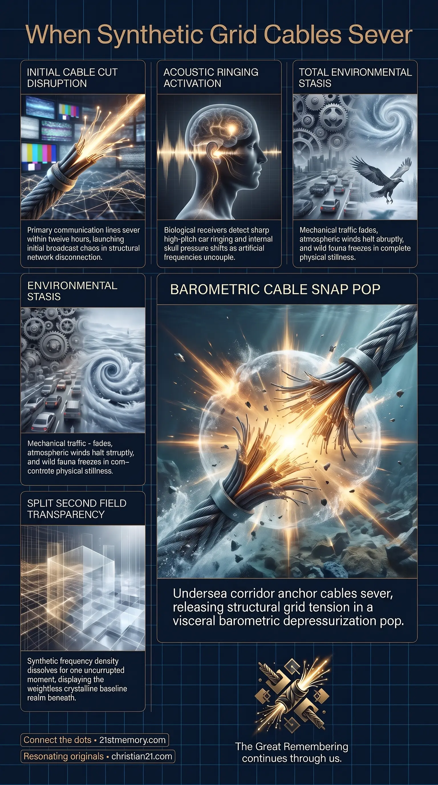

The 72-Hour Matrix Blackout
The 72-Hour Matrix Blackout — communications collapse, public panic cycles, and the physical indicators of system severance inside the first 72 hours.

Watch this series on YouTube — every video dubbed into 20 languages. Tap the settings gear on any video, then Audio track, to hear it in yours.
The 72-Hour Matrix Blackout — communications collapse, public panic cycles, and the physical indicators of system severance inside the first 72 hours.

Silence Before the Snap — high-pitch ear ringing, the pause of wind and nature, and the atmospheric pop when the cables snap.
Silence Before the Snap, also designated as the Atmospheric Pop, marks a decisive physical threshold occurring within the first 72 hours of the global communications severance. Within this precise operational window, the physical atmosphere undergoes an abrupt sensory and electromagnetic collapse characterized by the sudden cessation of ambient environmental movement and acoustic resonance. It manifests as a profound, suspended state where human auditory perception registers an ultra-high frequency, everyday kinetic motion rapidly recedes, and the surrounding natural world enters complete suspension.
This phenomenon is not merely an emotional or psychological lull, but the physical byproduct of the primary undersea cables severing and the simulated energetic web breaking apart. Because these global communication lines serve as projected anchor points and corridor stabilizers for the artificial reality construct, their physical and vibrational disconnection releases artificial tension within the local environment. The resulting instant produces a dramatic, instantaneous drop in pressure that clears the perceptual frequency plane, allowing the living baseline of the realm to bleed through without distortion for an uncorrupted instant.
The primary revelation of this phase is that what appears to ordinary perception as an external infrastructure disruption is fundamentally a frequency fracture operating throughout the atmospheric envelope. The sudden silence experienced in the physical senses is direct sensory verification that external acoustic density is continuously held and generated by technological energetic conduits.
When the cables are cut, the artificial grid tension that maintains constant pressure across the realm snaps. In that exact instant, the atmospheric pop is triggered, and for a solitary split second, the ambient field becomes completely unburdened by synthetic frequency interference. This brief clearing reveals that the baseline environment is innately clear, crystalline, and weightless, proving to sensory perception that ambient atmospheric noise, barometric heaviness, and artificial electromagnetic drag are artificially generated constructs.
The Silence Before the Snap occurs strictly within the first 72 hours of the blackout timeline. This phase marks the culmination of an escalating physiological and environmental sequence that builds as the communications grid goes dark:
Phase One (Hours 0–12) initiates the structural cut where primary comms and internet lines are severed, flooding conventional communication channels with chaos and blame narratives.
Phase Two (Hours 12–36) unfolds as public survival scrambles peak and programming anomalies cause panic among baseline populations.
Phase Three (Hours 36–72) marks the opening window where infrastructure cracking transitions into palpable sensory markers, culminating directly in the Silence Before the Snap and the Atmospheric Pop.
The entry into the silence is preceded by distinct auditory sensations centered directly in human physiology. Individuals experience a sharp ear ringing vibrating at an ultra-high pitch located just beyond normal physical hearing range. This acoustic shift is accompanied by a subtle internal skull buzz and a sense of shifting internal ear pressure, demonstrating that the biological receiver is de-coupling from artificial broadcast resonance.
Simultaneously, the external physical surroundings undergo an unnatural, total deceleration:
Traffic Noise Dissipation: The continuous mechanical roar of ground transit, industrial machinery, and background civilian movement fades entirely, draining the acoustic landscape of artificial rumble.
Atmospheric Stasis: The wind abruptly ceases, halting air currents and creating a heavy, suspended atmospheric density.
Biological Freezing: Wild fauna, birds, and domestic animals abruptly cease calling and movement, producing a state where all of nature visibly holds its breath in anticipation of the structural break.
The climax of this silence is the physical and energetic snap of the cables. Global undersea lines are not merely glass and metal data conveyors; within the energetic framework of the realm, they operate as corridor stabilizers and projected anchor points that anchor the artificial reality matrix between landmass clusters.
When these cables are severed, the structural frequency tension that they broadcast into the atmosphere collapses instantaneously. The release of this tension causes a visceral, sudden drop in barometric pressure felt across the physical vessel as a sharp pop in the atmosphere. The sensation mirrors the rapid depressurization of a sealed cabin or an explosive release of static electricity across the local airspace.
Immediately upon the occurrence of the atmospheric pop, a momentary perceptual phenomenon occurs:
The persistent energetic dampening that blankets the realm vanishes entirely for a single, uncorrupted heartbeat.
The field registers as clearer, lighter, and more transparent than human senses have ever previously experienced in physical existence.
In this split second, the synthetic density holding the physical senses dissolves, offering a direct, unobstructed glimpse of the underlying pristine realm before secondary operational events initiate.
The Silence Before the Snap serves as the direct physical dividing line between synthetic continuity and open operational collapse. It connects laterally to the biological shifts of the early blackout timeline, directly following the progressive stages of static build-up, erratic animal behavior, and abnormal barometric heaviness.
Furthermore, this physical indicator interfaces directly with the breakdown of the artificial reality matrix. Because communication lines represent the dense physical manifestation of the overarching electromagnetic control scaffolding, their severance dismantles the projected continuity codes that maintain regional containment and distance illusion. The split-second field clearing acts as an initial micro-exposure to the un-overlaid baseline, setting up the broader visual glitches, pixel flickers, and eventual uncloaking of the true crystalline structures beneath.
Recognizing the Silence Before the Snap grants resonating souls immediate operational situational awareness. Rather than succumbing to the disorienting sensory isolation or panic that grips the unawakened populace when the cables snap, attuned individuals recognize the high-pitched ear ringing and atmospheric drop as precise confirmation that the primary infrastructure phase is executing exactly on schedule.
The phenomenon dictates specific tactical behavior: individuals are guided to remain stationary, avoid large panic corridors, and remain grounded within small localized communities as the physical field stabilizes. Crucially, the split-second field clearing serves as a vital anchoring benchmark. By holding internal frequency balance during the atmospheric pop, conscious individuals cut through the subsequent fear broadcasts and psychological shockwaves, establishing themselves as stable lighthouses while artificial societal scaffolding disintegrates.
This topic is free to share. Support the archive →